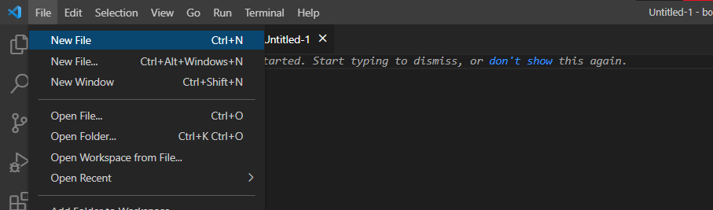

Boostrap ile Spinner Buttons Projesi
Bu projeyi oluştururken izlediğim adımları sitenin devamında açıklamaya çalıştım.
Proje Hazırlıkları
Bilgisayarınızda henüz boostrap kurulumu yapmadıysanız, bağlantıya tıklayarak kurulum işlemini gerçekleştirebilirsiniz.
Boostrap Nedir?
Bootstrap, Twitter tarafından geliştirilen ücretsiz, açık kaynak kodlu ve iş yükünü oldukça hafifleten HTML / CSS / JS kütüphanesidir. Neredeyse her web tarayıcı ile uyumlu altyapısı ve kütüphanesinde web tasarımcıların işini kolaylaştıracak birçok bileşeni barındırması sebebi ile kullanım alanı oldukça geniştir.
Boostrap Ne İşe Yarar?
Bootstrap kütüphanesi, web sayfa tasarımlarını daha kolay bir hale getirerek, mobil cihazlar başta olmak üzere bir çok farklı ekran çözünürlüğüne uygun web siteleri yapılabilmesini sağlamaktadır. Gerek ücretsiz javascript ve icon kütüphane destekleri ile gerek ise hızlı ve işlevsel yapısı ile web tasarımcıların işini bir hayli kolaylaştırma, zaman kazandırmaktadır.
Bootstrap Kurulum ve Kullanımı
Kurulum: İndirdiğiniz sıkıştırılmış dosyayı klasöre çıkartın. Daha sonra bootstrap.min.css veya bootstrap.css herhangi birini CSS klasörüne almanız yeterli. Çok gerekirse kendi stil dosyanızın içerisinden bazı klaslarda !important özelliğini kullanarak dilediğiniz kısımları özelleştirebilirsiniz. Bunun haricinde eğer web sitenizde sözdizimi, animasyon vb. javascript kullanacaksanız bootstrap.js dosyasını da indirerek yararlanabilirsiniz.
Kullanım: CSS ve isteğe bağlı JS dosyalarını sayfa içerisine çağırdıktan sonra doğrudan HTML içerisinde kullanabilirsiniz. Kullanımı oldukça basittir.
Projeyi Oluşturma
Bu projeyi yaparken Visual Studio Code uygulamasını kullandım. Fotoğrafta gördüğünüz New File kısmına tıklayarak yeni bir proje başlattım ve gerekli kodları yazmaya başladım
Spinners Eklemek
Sayfanızın istediğiniz yerlerinde Spinners oluşturmak için gerekli komutları aşağıya ekledim.
Spinners Renklendirme
Spinners istediğiniz şekilde renklendirmek için gerekli komutlar şu şekildedir;
Growing Spinner (Büyüyen Spinner)
İsteğe bağlı spinnerları bunun gibi farklı görünüm sahibi yapabilirsiniz.
Growing Spinner Renklendirme
Growing Spinner istediğiniz rengi vermek için spinner ile aynı renk komutlarını kullanıyoruz
Spinners Boyutlandırma
Diğer bileşenlerde hızla kullanılabilecek daha küçük bir spinner yapmak için .spinner-border-sm veya .spinner-grow-sm ekleyin.
Spinner Buttons
Bir eylemin şu anda işlenmekte veya gerçekleşmekte olduğunu belirtmek için düğmeler içindeki döndürücüleri kullanın. Ayrıca, döndürme öğesindeki metni değiştirebilir ve gerektiğinde düğme metnini kullanabilirsiniz.